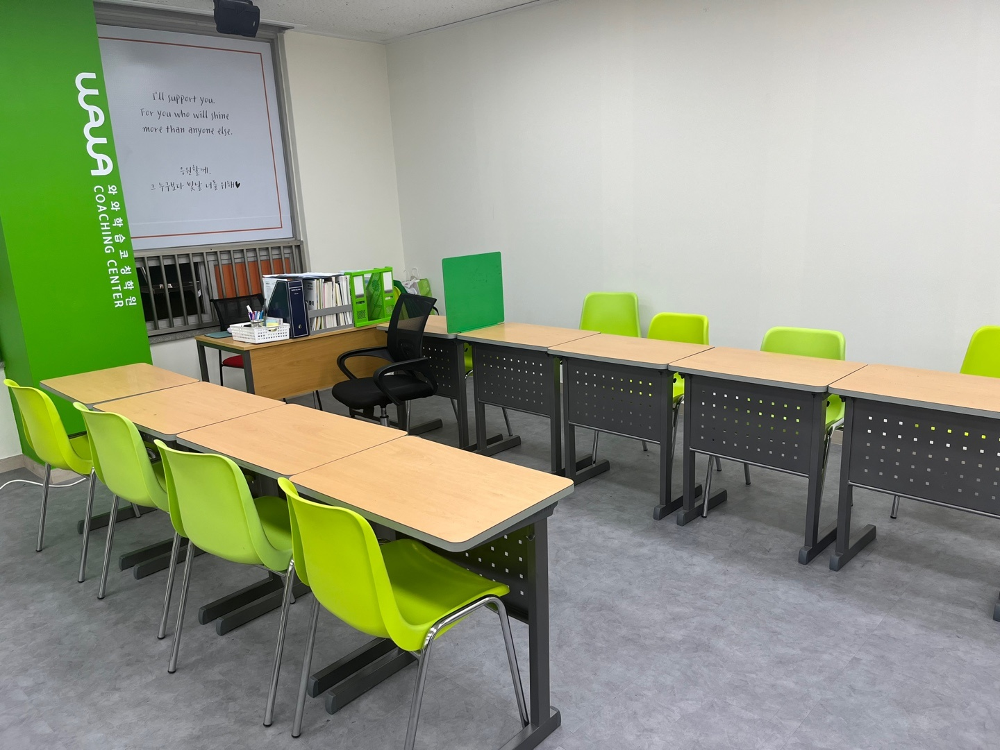
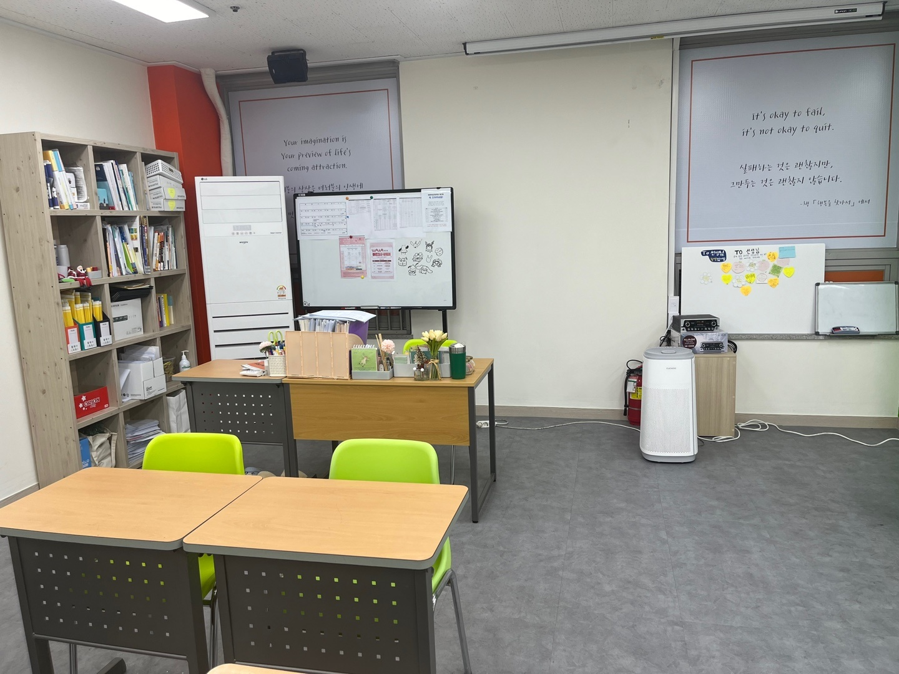

광주광역시 광산구 월계동 첨단지구에 있는 천곡중학교(천곡중)는 2001년에 문을 연 공립 중학교입니다. 월계로16번길에 있어서 첨단지구 안에서 걸어 다니는 아이들이 많습니다. 이 학교 학부모님들께 요즘 자주 듣는 질문이 하나 있습니다. “선행을 어디까지 시켜야 하나요?”
질문 뒤에는 대개 이런 상황이 붙어 있습니다. 아이는 이미 한 학기, 어떤 집은 한 학년을 앞서 나가고 있는데 정작 학교 시험 점수는 그대로입니다. 진도는 분명히 빨리 나가는데 성적표는 움직이지 않으니 더 빨리 나가야 하나 싶어집니다. 그런데 이런 경우 빠진 것은 속도가 아닌 경우가 훨씬 많습니다.
2학기 기말고사는 보통 12월 초에서 중순에 치러집니다. 10월 초인 지금 두 달 남짓 남았습니다. 오늘은 이 두 달을 앞으로 나가는 데 쓸지, 뒤를 메우는 데 쓸지 어떻게 정하는지 정리해 보겠습니다.
선행의 적정선은 “지난 단원을 설명할 수 있는가”입니다
선행이 몇 개월이 맞는지에는 정답이 없습니다. 아이마다 다르기 때문입니다. 다만 판단 기준은 하나로 줄일 수 있습니다. 지금 배우는 것보다 앞 단원을 아이가 말로 설명할 수 있는가.
설명하지 못하는데 앞으로 나가면, 새 단원에서 또 막힙니다. 중학교 수학은 단원이 서로 기대어 있습니다. 일차방정식이 흔들리면 연립방정식에서 막히고, 연립방정식이 흔들리면 일차함수 그래프에서 다시 막힙니다. 이때 아이는 “함수를 모르겠다”고 말하지만 실제로 비어 있는 곳은 그보다 두 단원 앞입니다.
그래서 선행을 결정하기 전에 해 보실 일은 하나입니다. 교과서 목차를 펴 놓고 단원 이름만 보고 “이건 뭘 하는 단원이야?”라고 물어보세요. 문제를 풀리는 게 아니라 말로 묻는 것입니다. 세 단원 연속으로 대답이 나오면 선행을 더 해도 괜찮습니다. 한 군데라도 “어… 그건 좀”이 나오면 그 단원이 오늘 할 일입니다.
중2 수학, 구멍이 잘 생기는 자리
학년별로 지금 손댈 곳이 다릅니다. 아래는 일반적인 중학교 교육과정을 기준으로 한 이야기이고, 진도 순서와 범위는 학교와 해마다 달라지니 반드시 학교의 평가 계획을 확인해 주세요.
- 중학교 1학년 — 아직 구멍이라고 부를 만큼 쌓이지 않았습니다. 이 시기의 선행은 분량보다 풀이를 끝까지 쓰는 습관이 먼저입니다. 답만 맞히고 넘어가는 습관이 붙으면 2학년에서 그대로 터집니다.
- 중학교 2학년 — 구멍이 가장 잘 생기는 학년입니다. 식의 계산, 연립방정식, 일차함수, 도형의 성질이 연달아 나오는데 앞 단원을 딛고 올라서는 구조라 한 칸이 비면 그 뒤가 전부 흔들립니다. 2학기 기말 범위만 보지 마시고 1학기 시험지를 같이 펴 보셔야 하는 이유입니다.
- 중학교 3학년 — 고등학교 입학 전 마지막 내신입니다. 여기서의 선행은 “고등 수학을 미리 나가는 것”보다 인수분해·이차방정식·이차함수를 고등학교에서 다시 쓸 수 있을 만큼 끝내 두는 것이 우선입니다. 이 세 단원은 고1 공통수학에서 거의 바로 이어집니다.
영어는 성격이 조금 다릅니다. 영어에서 말하는 선행은 진도가 아니라 쌓이는 양에 가깝습니다. 시험 범위가 나오기 전인 지금은 단어와 문법 기본기를 쌓아 두는 시기이고, 범위가 나온 뒤에는 교과서 본문으로 들어가면 됩니다. 범위가 안 나왔다고 손을 놓으면, 나온 뒤에 할 일이 두 배가 됩니다.

기출 분석은 시험지를 구해 오는 일이 아닙니다
상담에서 가장 자주 오해받는 말이 “기출 분석”입니다. 그 학교 시험지를 어디선가 구해 오는 일로 알고 계신 분이 많습니다. 그렇지 않습니다.
먼저 분명히 말씀드릴 것이 있습니다. 출제 범위, 서술형 비중, 어느 교재에서 몇 문항이 나오는지는 학교마다 다르고, 같은 학교라도 학년·과목·해마다 달라집니다. 그래서 저희는 특정 학교의 출제 경향을 숫자로 단정해 말씀드리지 않습니다. 그런 숫자를 자신 있게 말하는 곳이 있다면 한 번 더 확인해 보시기를 권합니다.
가장 정확한 기출은 이미 아이 가방 안에 있습니다. 지난 중간고사 시험지입니다. 선행을 더 할지 말지를 정하는 데도 이 시험지가 가장 좋은 재료입니다.
- 문제마다 출처를 적어 봅니다. 교과서인지, 학교 프린트인지, 문제집인지. 손으로 표시하다 보면 그 과목 선생님이 어디를 중심에 두시는지가 보입니다.
- 서술형 배점을 더해 봅니다. 전체에서 서술형이 차지하는 비중을 아이가 직접 계산하게 하세요. 숫자로 보면 “풀이를 써야 한다”는 말이 비로소 와닿습니다.
- 틀린 문제를 세 갈래로 나눕니다. 몰라서 틀린 것, 헷갈려서 틀린 것, 급해서 틀린 것. 처방이 전혀 다릅니다. 몰라서 틀린 것만이 “선행을 멈추고 돌아가야 할” 신호입니다.
- 부분점수를 받은 자리를 찾습니다. 맞지도 틀리지도 않은 문항이 가장 많은 것을 알려 줍니다. 아는데 쓰지 못한 자리이기 때문입니다.
영어학원·수학학원과 코칭의 차이
“선행을 어디까지”라는 질문이 잘 풀리지 않는 이유는, 그 질문에 답하려면 수업 시간이 아니라 수업 사이를 봐야 하기 때문입니다.
학원은 가르치는 곳입니다. 정해진 진도를 정해진 시간에 설명합니다. 아이가 어제 배운 것을 집에서 다시 펴 봤는지, 모르는 단원을 넘겨 버렸는지는 다음 시간 문제를 풀려 봐야 알게 됩니다. 반 단위로 진도가 돌아가니 한 아이만 두 단원 뒤로 돌아가 주기도 어렵습니다.
학습코칭은 가르치는 대신 아이가 스스로 하는 과정을 옆에서 보는 쪽입니다. 오늘 어디를 펴서 몇 분을 앉아 있었는지, 어느 문제에서 펜을 내려놓았는지, 같은 페이지를 얼마나 오래 붙잡고 있었는지를 코치가 봅니다. 그래서 선행과 복습의 비율을 아이마다 다르게 잡을 수 있습니다. 어떤 아이에게는 이번 두 달이 전부 복습이고, 어떤 아이에게는 절반이 선행입니다.
어느 쪽이 더 낫다는 이야기가 아닙니다. 설명이 부족한 아이에게는 가르치는 곳이 필요하고, 설명은 들었는데 혼자 앉으면 무너지는 아이에게는 보는 사람이 필요합니다. 아이가 어느 쪽인지부터 정하면 선택이 훨씬 쉬워집니다.
천곡중학교 가까이 — 와와학습코칭 첨단점
천곡중학교가 있는 월계동에 와와학습코칭 첨단점이 있습니다. 광주 광산구 월계로 191, 4층입니다. 첨단지구 안이라 월봉초등학교·월계초등학교·봉산초등학교·산월초등학교·첨단초등학교·신용초등학교 아이들부터 천곡중학교·월봉중학교 학생들까지 오가고, 고등학교는 장덕고등학교로 이어지는 학생들이 많습니다.
첨단점 교실은 책상이 칠판 하나를 향해 놓여 있지 않습니다. 한 줄은 기둥 쪽으로, 한 줄은 벽을 따라 놓여 있어서 아이마다 자기 교재로 자기 분량을 해 나갑니다. 코치 책상은 창가 모서리에 있어 두 줄이 한눈에 들어옵니다. 선행과 복습의 비율을 아이마다 다르게 가져갈 수 있는 것은 이 배치 덕분입니다. 교실의 이동식 화이트보드에는 계획표가 붙어 있고, 코치 책상 옆 파일꽂이에는 아이별 자료가 따로 꽂혀 있습니다. 진도를 반 단위로 돌리지 않고 아이 단위로 적어 두기 때문입니다.
첨단점에 대한 더 자세한 이야기는 광주 광산구 월계동 첨단점, 성적표 다음 날이 더 중요합니다 글에 담았습니다. 학습 진단과 상담은 무료이니, 아이 시험지를 들고 오셔서 “앞으로 갈지 뒤로 갈지”부터 같이 정해 보셔도 좋겠습니다.
중학교 내신은 어디로 이어지나
중학교 내신 그 자체가 고등학교 성적으로 넘어가지는 않습니다. 넘어가는 것은 습관과 메워 두지 않은 단원입니다. 천곡중학교에서 장덕고등학교로 진학하면 고등학교 1학년 첫 내신이 곧바로 대입 자료가 되기 시작하고, 그 흐름은 2027학년도 수능(2026년 11월 19일)처럼 해마다 돌아오는 일정 위에 놓입니다. 사정이 생겨 학교를 다니기 어려워진 경우에도 검정고시로 고등학교 과정을 마치고 수능으로 이어 가는 길이 있지만, 어느 길이든 결국 혼자 앉아서 공부하는 시간이 필요하다는 점은 같습니다. 중학교 때 그 시간을 만들어 두는 것이 지금 할 수 있는 가장 긴 준비입니다.
정리하면
- 선행의 적정선은 개월 수가 아니라 지난 단원을 말로 설명할 수 있는지로 정합니다.
- 중학교 2학년은 구멍이 가장 잘 생기는 학년입니다. 2학기 기말 범위만 보지 말고 1학기 시험지를 같이 펴 보세요.
- 기출 분석은 남의 시험지를 구하는 일이 아니라 우리 아이 지난 시험지를 읽는 일입니다. 출제 비중은 학교·학년·해마다 다르니 숫자를 믿지 마세요.
- 2학기 기말까지 두 달 남짓입니다. 앞으로 갈지 뒤를 메울지 이번 주에 정하면 두 달을 온전히 쓸 수 있습니다.
※ 이 글의 학년별 내용은 일반적인 중학교 교육과정을 바탕으로 한 설명입니다. 천곡중학교의 실제 시험 일정, 출제 범위, 서술형 반영 비율, 수행평가 과제와 평가 기준, 학년별 진도는 확인하지 못해 이 글에 담지 않았습니다. 학교와 학년·과목·연도에 따라 다르므로 반드시 학교에서 안내하는 학사일정과 평가 계획에서 확인해 주세요. 확인되지 않은 숫자는 기재하지 않았습니다. 사진은 와와학습코칭 첨단점 센터 사진입니다.